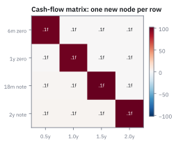
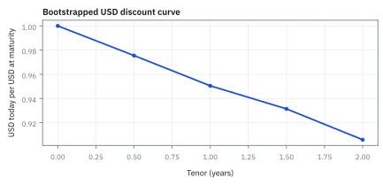
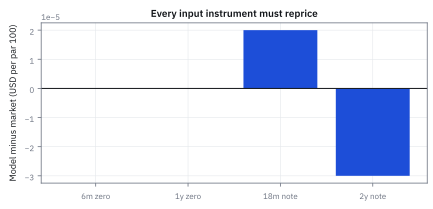
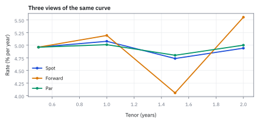
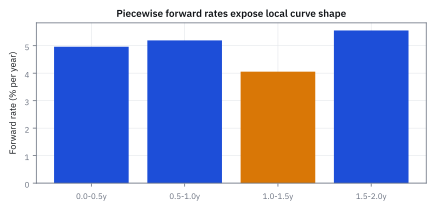

20.1 Zero Rates, Forward Rates, and Bootstrapping
ราคาตราสารในตลาดซ่อนราคาของเงิน \$1 ในแต่ละวันอนาคตไว้ เราแกะออกมาทีละอายุจากสั้นไปยาว แล้วเขียนตัวเลขชุดเดียวกันใหม่เป็น zero rate และ forward rate
เช้าวันหนึ่งโต๊ะตราสารหนี้เห็นราคาสี่ตัว (ตัวเลขสมมติ ต่อหน้าตั๋ว \$100): zero-coupon bond 6 เดือนราคา \$97.55, zero-coupon bond 1 ปีราคา \$95.05, note 18 เดือนคูปอง 4.80% ต่อปีจ่ายทุกหกเดือนราคา \$100 และ note 2 ปีคูปอง 5.00% ราคา \$100 บริษัทต้องจ่าย \$10,000,000 ในอีก 18 เดือนและอยากกันเงินไว้วันนี้พอดี เพื่อนร่วมโต๊ะบอกว่า note 18 เดือนขายที่ par แปลว่าตลาดให้ 4.80% คิดลดด้วย 4.80% ทบครึ่งปีสามงวดได้ \$9,313,225.75 ถูกไหม?
ลองตอบก่อนเปิดเฉลย
เกือบ แต่ไม่ถูก ต้องกันเงิน \$9,314,218.75 วิธีของเพื่อนขาดไป \$993.00 เพราะ 4.80% เป็นอัตราเฉลี่ยของเงินสามก้อนที่มาคนละวัน ไม่ใช่ราคาของเงินก้อนเดียวในเดือนที่ 18 ราคาที่ถูกได้จากการหักคูปองสองงวดแรกออกจาก note ด้วยราคาของ zero สองตัว เหลือ discount factor 0.931421875 ของวันที่ 18 เดือน
สิ่งที่เราจะสร้าง
18.1 ย้ายเงินข้ามเวลาด้วย discount factor และ 18.2 บอกว่าราคาพันธบัตรคือเงินแต่ละก้อนคูณ discount factor ของอายุตัวเอง แต่ยังไม่ได้บอกว่า discount factor เหล่านั้นมาจากไหน ตลาดไม่ได้ประกาศมันตรง ๆ ตลาดประกาศราคาตราสาร หน้านี้แกะมันออกมาเอง
เริ่มจาก zero สองตัวที่อ่านได้ทันที แกะ note 18 เดือนและ 2 ปีทีละตัว (bootstrapping) ตรวจด้วยการคิดราคากลับ แปลงเป็น zero rate หา forward rate ด้วยเหตุผลห้ามเงินฟรีแบบ 19.1 ล็อก forward ด้วย zero สองตัว (FRA) แล้วปิดด้วย par yield และ yield to maturity ซึ่งตลาดชอบ quote แต่ใช้คิดลดไม่ได้ 20.2 จะใช้ discount factor ชุดนี้ตั้งราคา swap
ศัพท์ที่ใช้ในหัวข้อนี้
- Zero-coupon bond และ discount factor
- zero-coupon bond จ่ายเงินก้อนเดียวตอนครบกำหนด ไม่มีคูปองระหว่างทาง ราคาต่อหน้าตั๋ว \$1 ของมันจึงเป็น discount factor ของวันนั้นพอดี ใช้ย้ายเงินอนาคตมาวันนี้แบบ 18.1
- Bootstrapping
- การแกะ discount factor ทีละอายุจากตราสารสั้นไปยาว ตราสารใหม่แต่ละตัวมีเงินแค่ก้อนเดียวที่ยังไม่รู้ราคา ก้อนอื่นใช้ค่าที่แกะไว้แล้ว มีไว้เพราะตลาดขายตราสารที่มีคูปอง ไม่ได้ขาย discount factor
- Zero rate (spot rate)
- อัตราต่อปีที่ให้ discount factor ของอายุหนึ่งพอดีภายใต้วิธีทบต้นที่ประกาศไว้ เป็นแค่อีกวิธีเขียน discount factor ให้คนคุยกันรู้เรื่อง ไม่ใช่ข้อมูลใหม่
- Forward rate
- อัตราที่ตกลงวันนี้สำหรับช่วงเวลาที่เริ่มในอนาคต ถูกบังคับด้วยการห้ามเงินฟรีจาก discount factor สองตัว ไม่ใช่คำทำนายว่าอัตราจริงจะเป็นเท่าไร
- Forward Rate Agreement (FRA)
- สัญญานอกตลาด (over-the-counter) ที่ล็อกอัตราดอกเบี้ยแบบ simple ของช่วงอนาคต ใช้ล็อกต้นทุนกู้หรือผลตอบแทนเงินฝากล่วงหน้า และเลียนแบบได้ด้วย zero สองตัว
- Par yield และ yield to maturity
- par yield คือคูปองที่ทำให้พันธบัตรราคาเท่าหน้าตั๋ว yield to maturity คืออัตราเดียวที่คิดลดเงินทุกก้อนของพันธบัตรแล้วได้ราคาตลาด ทั้งสองเป็นค่าเฉลี่ยของหลายอายุ ใช้ quote ได้แต่ใช้คิดลดเงินก้อนเดียวไม่ได้
สัญลักษณ์และหน่วย
| สัญลักษณ์ | ความหมาย | หน่วย |
|---|---|---|
| $D(0,T)$ | discount factor: ราคาวันนี้ของ \$1 ที่ได้ตอน $T$ | \$ ต่อ \$ |
| $P(t,T)$ | ราคาที่เวลา $t$ ของ zero ที่จ่าย \$1 ตอน $T$ โดย $P(t,t)=1$ และ $P(0,T)=D(0,T)$ | \$ ต่อ \$ |
| $T,\ T_1,\ T_2$ | อายุนับจากวันนี้ | ปี |
| $z(T)$ | zero rate ทบต้นต่อเนื่อง | ต่อปี |
| $f(T_1,T_2)$ | forward rate ทบต้นต่อเนื่องของช่วง $T_1$ ถึง $T_2$ | ต่อปี |
| $F(T_1,T_2)$ | forward rate แบบ simple ของช่วงเดียวกัน (แบบที่ FRA ใช้) | ต่อปี |
| $c,\ y$ | คูปองต่อปี และ yield to maturity (จ่ายและทบทุกครึ่งปี) | ต่อปี |
ขั้นที่ 1 — สองจุดแรกอ่านได้ทันทีจาก zero-coupon bond
เริ่มจากของที่ง่ายที่สุด zero-coupon bond มีเงินก้อนเดียว ราคาของมันหารด้วยหน้าตั๋วจึงเป็นราคาของเงิน \$1 ในวันครบกำหนด ซึ่งคือนิยามของ discount factor ใน 18.1 ไม่มีอะไรต้องแกะ
เงิน \$1 ที่จะได้ในอีก 6 เดือน วันนี้ซื้อได้ด้วย 97.55 เซนต์ และ \$1 ในอีกหนึ่งปีซื้อได้ด้วย 95.05 เซนต์ หารด้วย 100 เพราะราคา quote ต่อหน้าตั๋ว \$100
ตำราหลายเล่มเขียนราคานี้ว่า $P(t,T)$ คือราคาที่เวลา $t$ ของเงิน \$1 ตอน $T$ โดย $P(t,t)=1$ วันนี้คือ $t=0$ จึงได้ $P(0,T)=D(0,T)$ หน้านี้ใช้ $D$ และใช้ $P(t,T)$ เมื่อต้องพูดถึงราคาในวันอนาคต
ขั้นที่ 2 — note 18 เดือน: หักคูปองที่รู้ราคาแล้วออก
note 18 เดือนจ่ายสามก้อน: คูปองครึ่งปี 2.40 ต่อหน้าตั๋ว \$100 ที่เดือน 6 และ 12 และ 102.40 (คูปองรวมเงินต้น) ที่เดือน 18 18.2 ขั้นที่ 2 บอกแล้วว่าราคาทั้งใบต้องเท่าผลบวกของชิ้นย่อย สองชิ้นแรกรู้ราคาจากขั้นที่ 1 สมการจึงเหลือตัวไม่รู้ตัวเดียว
คูปองสองก้อนแรกมีราคารวม \$4.6224 วันนี้ ราคา note ที่เหลือ \$95.3776 จึงเป็นราคาของเงิน \$102.40 ในเดือนที่ 18 หารออกได้ราคาของ \$1 คือ 0.931421875 หารลงตัวพอดีเพราะ 102.4 คูณ 10 คือ 1,024 ซึ่งเท่ากับ $2^{10}$
จุดที่ต้องจับให้ได้คือเงินก้อนสุดท้ายเป็น 102.40 ไม่ใช่ 2.40 หรือ 100 และการหักแบบนี้ใช้ได้เพราะคูปองสองก้อนแรกของ note เหมือน zero สองตัวทุกอย่าง ต่างกันแค่ขนาด
ขั้นที่ 3 — คำตอบของโจทย์เปิดหน้า: เงิน \$10 ล้านในเดือนที่ 18
โจทย์ให้อะไรมาบ้าง: ต้องจ่าย \$10,000,000 ในเดือนที่ 18 และ $D(0,1.5)=0.931421875$ จากขั้นที่ 2 เพื่อนคิดลดด้วย 4.80% ทบครึ่งปีสามงวด คือหารด้วย $1.024^3$
คำตอบ: ต้องกันเงิน \$9,314,218.75 วิธีของเพื่อนขาด \$993.00 เพราะ $1/0.931421875=1.073627$ ไม่ใช่ 1.073742 อัตราทบครึ่งปีที่ถูกของเงินก้อนนี้คือ 4.7927% (ขั้นที่ 6) ต่ำกว่า 4.80% ราว 0.7 bp ถ้า zero rate 18 เดือนขยับ 1 bp มูลค่านี้เปลี่ยนราว $1.5(9{,}314{,}218.75)(0.0001)=\$1{,}397.13$
ตรวจเองใน 10 วินาที: \$10 ล้าน คูณ 0.93 ได้ราว \$9.3 ล้าน ตรงหลักแรก และคำตอบของเพื่อนต้องต่ำกว่าคำตอบที่ถูก เพราะคิดลดด้วยอัตราที่สูงกว่า
ขั้นที่ 4 — note 2 ปี และทำไมต้องไล่จากสั้นไปยาว
note 2 ปีคูปอง 5.00% จ่าย 2.50 สามครั้ง แล้ว 102.50 ตอนสิ้นปีที่ 2 ถึงตอนนี้เรารู้ discount factor ของสามวันแรกแล้ว สมการจึงเหลือตัวไม่รู้ตัวเดียวอีกครั้ง ให้ $S_3$ คือผลบวกของ discount factor สามตัวแรก
เขียนทั้งสี่ตราสารเป็นระบบสมการ แถวคือตราสาร คอลัมน์คือวันจ่าย จะได้ matrix สามเหลี่ยมล่าง (Figure 20.1a) แถวใหม่เพิ่มคอลัมน์ใหม่แค่คอลัมน์เดียว การแก้จากบนลงล่างคือ forward substitution แบบที่ใช้แก้ระบบสมการเชิงเส้นสามเหลี่ยม ไม่ต้องกลับ matrix
ถ้าเริ่มจาก note 2 ปี สมการเดียวมีตัวไม่รู้สี่ตัว แก้ไม่ได้ และถ้าตราสารในตลาดไม่ได้ครบกำหนดตรงวันจ่ายของกันและกัน สามเหลี่ยมจะพัง ต้องเติมกฎ interpolation ระหว่างจุด หรือแก้ทุกจุดพร้อมกันด้วย solver ค่าเต็มของ $D(0,2)$ คือ 0.9059165396
Figure 20.1a — ตารางเงินสด: ตราสารใหม่เปิดวันจ่ายใหม่ทีละวัน

ตาราง 4×4 ของเงินสดต่อหน้าตั๋ว \$100 แถว 6m zero คือ 100 ที่ 0.5 ปี แถว 1y zero คือ 100 ที่ 1.0 ปี แถว 18m note คือ 2.4, 2.4, 102.4 และแถว 2y note คือ 2.5, 2.5, 2.5, 102.5 ช่องเหนือเส้นทแยงเป็นศูนย์ทั้งหมด สีแดงเข้มคือเงินก้อนใหญ่ ข้อบกพร่องของภาพ: ทุกช่องพิมพ์ข้อความ “.1f” แทนตัวเลข เพราะสคริปต์ส่งรูปแบบตัวเลขผิด ให้อ่านค่าจากคำบรรยายนี้
Figure 20.1b — discount curve ที่แกะได้จากราคา

ห้าจุดที่ 0, 0.5, 1, 1.5 และ 2 ปีคือ 1, 0.9755, 0.9505, 0.931421875 และ 0.9059165 ต่อกันด้วยเส้นตรง แกนตั้งคือ \$ วันนี้ต่อ \$1 ที่วันครบกำหนด เส้นลดลงทุกช่วงเพราะอัตราเป็นบวก ช่วง 1 ถึง 1.5 ปีลดน้อยที่สุด (0.0191 เทียบราว 0.025 ในช่วงอื่น) ซึ่งขั้นที่ 8 จะเห็นเป็น forward rate ที่ต่ำ เส้นตรงระหว่างจุดเป็นแค่การวาด ไม่ใช่กฎ interpolation ที่เลือกแล้ว
ขั้นที่ 5 — ตรวจ curve ด้วยการคิดราคากลับ
โจทย์ให้อะไรมาบ้าง: discount factor สี่ตัวจากขั้นที่ 1, 2 และ 4 กับเงินสดของ note สองตัว ถ้าแกะถูก เอาเงินแต่ละก้อนคูณ discount factor ของวันจ่ายแล้วบวกกัน ต้องได้ราคาตลาดกลับมา
คำตอบ: note 18 เดือนได้ $2.4(0.9755)+2.4(0.9505)+102.4(0.931421875)$ และ note 2 ปีได้ $2.5(2.857421875)+102.5(0.9059165)$ ทั้งคู่กลับมาที่ \$100 zero สองตัวกลับมาที่ราคาเดิมตามนิยาม คอมพิวเตอร์เหลือส่วนต่างระดับ $10^{-14}$ ซึ่งเป็นแค่การปัดเศษของเลขทศนิยม
ตรวจเองใน 10 วินาที: ถ้าลืมเงินต้นแล้วหารด้วย 100 แทน 102.4 จะได้ $D(0,1.5)=0.953776$ มากกว่า $D(0,1)=0.9505$ คือเงินที่รอนานกว่ามีค่ามากกว่า ซึ่งเป็นไปไม่ได้เมื่ออัตราเป็นบวก และคิดราคากลับได้ 102.29 ไม่ใช่ 100
Figure 20.1c — ส่วนต่างหลังคิดราคากลับคือ unit test ของ curve

แท่งสี่แท่งคือราคาจาก curve ลบราคาตลาดต่อหน้าตั๋ว \$100 ของ 6m zero, 1y zero, 18m note และ 2y note: 0, 0, +0.00002 และ −0.00003 สองค่าหลังเป็นตัวเลขที่ใส่ไว้เพื่อแสดงหน้าตาของรายงาน ไม่ใช่ผลของ curve หน้านี้ ซึ่งคิดกลับได้ตรงเหลือแค่การปัดเศษระดับ $10^{-14}$ งานจริงตั้ง tolerance เป็นเงินไว้ก่อน และ curve ที่คิดราคากลับไม่ได้คือ curve ที่ผิด ไม่ว่าจะดูเรียบแค่ไหน
ขั้นที่ 6 — แปลง discount factor เป็น zero rate
คนในตลาดคุยกันด้วยอัตรา ไม่ใช่ discount factor จึงต้องแปลง แถวแรกเป็นนิยาม: เลือกทบต้นต่อเนื่องแบบ 18.1 ขั้นที่ 10 เพราะเลขชี้กำลังบวกกันได้ ซึ่งขั้นที่ 8 จะใช้ ที่เหลือคือแก้สมการหา $z$
ใส่ log ทั้งสองข้างเพื่อดึงเลขชี้กำลังลงมา แล้วหารด้วย $T$ เครื่องหมายลบทำให้อัตราเป็นบวก เพราะ $D\lt 1$ ทำให้ $\ln D\lt 0$ ทั้งสี่อายุได้ 4.9610%, 5.0767%, 4.7362% และ 4.9404% ต่อปี (เช่น $\ln 0.9755=-0.0248051$ หารด้วย 0.5)
ถ้าประกาศเป็นทบครึ่งปี อัตรา 18 เดือนคือ $2[(1/0.931421875)^{1/3}-1]=4.7927\%$ ถ้าทบปีละครั้งคือ 4.8501% ทั้งสามตัวคือ discount factor ตัวเดียวกัน การเปลี่ยนวิธีทบต้นเปลี่ยนตัวเลขอัตรา แต่ไม่เปลี่ยนราคา
ขั้นที่ 7 — forward rate มาจากการห้ามเงินฟรี: กู้ \$1,000 สองปี
ก่อนใช้กับเส้นของเรา ดูตัวอย่างที่เลขกลม วันนี้กู้ \$1,000 สองปีได้ที่ 10% ต่อปีทบปีละครั้ง หรือกู้หนึ่งปีที่ 8% แล้วตกลงวันนี้เลยว่าปีที่สองจะกู้ต่อที่อัตรา $X$ ทั้งสองทางรู้ผลตั้งแต่วันนี้ ไม่มีอะไรสุ่ม จึงต้องจบที่เงินเท่ากัน
ถ้าธนาคารยอมให้ปีที่สองกู้ที่ 8% เท่าปีแรก ทางที่สองจบที่ \$1,166.40 คนฉลาดจะกู้ทางนี้แล้วปล่อยกู้สองปีที่ 10% ได้คืน \$1,210 เก็บ \$43.60 ฟรีโดยไม่ใช้เงินตัวเอง การแข่งกันทำแบบนี้ดัน $X$ ขึ้นจนสองทางเท่ากัน
$X$ สูงกว่า 10% เพราะปีแรกจ่ายแค่ 8% ปีที่สองจึงต้องชดเชย ตรวจ: $1.08(1.1203704)=1.21=1.10^2$ ตัวเลขนี้ตกลงวันนี้สำหรับเงินที่จะกู้ในปีหน้า จึงเรียกว่า forward
ขั้นที่ 8 — forward ของเส้นเรา: ผลต่างของผลตอบแทนสะสม
ทำแบบขั้นที่ 7 แต่ทบต่อเนื่อง ทางแรกฝาก \$1 ยาวถึง $T_2$ ทางที่สองฝากถึง $T_1$ แล้วต่อด้วยอัตรา $f$ ที่ล็อกวันนี้ ตั้งให้เท่ากันแล้วใส่ log ผลคูณจึงกลายเป็นผลบวก นี่คือเหตุที่ขั้นที่ 6 เลือกทบต่อเนื่อง
$zT$ คือผลตอบแทนสะสมจากวันนี้ ถึง 1 ปีได้ 5.0767% ถึง 1.5 ปีได้ $1.5(4.7362\%)=7.1043\%$ ครึ่งปีที่เพิ่มมาได้แค่ 2.0276% หรือ 4.0552% ต่อปี forward จึงต่ำกว่า zero rate ทั้งสองตัว
ถ้าเอาอัตรามาลบกันตรง ๆ จะได้ $4.7362\%-5.0767\%=-0.34\%$ ซึ่งไม่มีความหมาย และถ้าเดาว่า forward ต้องอยู่ระหว่างสอง zero rate ก็ผิด เพราะ zero rate คือค่าเฉลี่ยของ forward ตั้งแต่วันนี้ ขั้นที่ 9 จะเห็นเรื่องนี้ชัด
ขั้นที่ 9 — zero rate คือค่าเฉลี่ยของ forward และ forward ชั่วขณะ
ทำขั้นที่ 8 กับทุกช่วงครึ่งปีของเส้นเรา แล้วต่อสี่ช่วงเข้าด้วยกัน ผลตอบแทนสะสมของสองปีต้องเท่าผลบวกของผลตอบแทนสะสมทีละช่วง จากนั้นซอยช่วงให้สั้นลงจนเป็นศูนย์
สองปีมีสี่ช่วงครึ่งปี หารสองข้างด้วย 2 ได้ว่า zero rate คือค่าเฉลี่ยของ forward สี่ช่วง ได้ 4.9404% ตรงกับขั้นที่ 6 พอดี เส้น zero จึงเรียบกว่าเส้น forward เสมอ และ forward 4.0552% ที่ต่ำดึงค่าเฉลี่ยลงได้โดยไม่ต้องอยู่ระหว่าง zero สองตัว
เมื่อช่วงสั้นลงจนเป็นศูนย์ ผลบวกกลายเป็นอินทิกรัล และ forward กลายเป็นความชันของ $-\ln D$ เรียกว่า instantaneous forward rate จุดซ้ายสุด $f(0)$ คือ short rate $r$ ซึ่งแบบจำลองของ 13.4 และ lattice ของ 20.3 ใช้เป็นตัวแปรหลัก ที่เวลา $t$ ใด ๆ เขียนเป็น $f(t,T)=-\partial\ln P(t,T)/\partial T$ และ $r(t)=f(t,t)$
Figure 20.1d — spot, forward และ par: ตัวเลขชุดเดียวกันสามมุม

แกนนอนคืออายุ 0.5 ถึง 2 ปี เส้น Spot คือ zero rate ทบต่อเนื่อง 4.9610, 5.0767, 4.7362 และ 4.9404% เส้น Forward คือ forward ครึ่งปีต่อเนื่อง 4.9610, 5.1924, 4.0552 และ 5.5530% วาดไว้ที่ปลายขวาของแต่ละช่วง เส้น Par ในภาพคือ 4.96, 5.01, 4.80 และ 5.00% ข้อบกพร่องของภาพ: สองจุดแรกของเส้น Par ผิด par yield (ทบครึ่งปี) ที่เส้นนี้บังคับคือ 5.0231% และ 5.1402% (ขั้นที่ 11) มีแค่ 4.80 และ 5.00 ที่ถูก และสามเส้นใช้วิธีทบต้นไม่เหมือนกัน
Figure 20.1e — forward ทีละช่วงแกว่งแรงกว่า zero rate มาก

แท่งสี่แท่งคือ forward ต่อเนื่องของช่วง 0–0.5, 0.5–1, 1–1.5 และ 1.5–2 ปี: 4.9610, 5.1924, 4.0552 และ 5.5530% แท่งสีต่างคือช่วง 1–1.5 ปีของขั้นที่ 8 forward ลง 114 bp แล้วขึ้น 150 bp ขณะที่ zero rate ขยับไม่เกิน 34 bp ต่อช่วง เพราะ forward คือความชันของ $\ln D$ ส่วน zero คือค่าเฉลี่ย ฟันเลื่อยแบบนี้มักบอกว่าราคาที่ใช้มีสัญญาณรบกวน ไม่ใช่ตลาดคาดว่าอัตราจะขึ้นลงแบบนั้น (ดูหัวข้อความผิด)
ขั้นที่ 10 — ล็อก forward ด้วย zero สองตัว: FRA
โจทย์ให้อะไรมาบ้าง: บริษัทจะได้เงิน \$1,000,000 ในอีก 1 ปี และอยากฝากต่ออีกครึ่งปีโดยรู้อัตราตั้งแต่วันนี้ zero 1 ปีราคา 0.9505 และ zero 1.5 ปีราคา 0.931421875 ต่อหน้าตั๋ว \$1
คำตอบ: วันนี้ขาย zero 1 ปีหน้าตั๋ว \$1,000,000 ได้ \$950,500 แล้วเอาเงินทั้งหมดซื้อ zero 1.5 ปีได้หน้าตั๋ว $N=\$1{,}020{,}482.80$ เงินลงทุนวันนี้เป็นศูนย์ ปีที่ 1 ใช้เงิน \$1,000,000 ที่ได้มาจ่ายคืน zero ที่ขายไป ปีที่ 1.5 ได้ \$1,020,482.80 เท่ากับฝากครึ่งปีที่ 4.0966% ต่อปีแบบ simple ซึ่งคือ 4.0552% แบบต่อเนื่องของขั้นที่ 8 เขียนอีกวิธี
สูตรทั่วไปคือ $1+(T_2-T_1)F=P(t,T_1)/P(t,T_2)$ FRA คือสัญญาที่ล็อกอัตรานี้ตรง ๆ ถ้าใครเสนอ FRA ที่อัตราอื่น พอร์ต zero สองตัวนี้เก็บส่วนต่างได้ ถ้าให้ $T_1$ เป็นวันนี้จะได้ simple spot rate แบบที่ LIBOR ใช้: $L(0,0.5)=2(1/0.9755-1)=5.0231\%$
ตรวจเองใน 10 วินาที: $0.9505/0.931421875$ ต้องได้ราว 1.0205 และ $e^{0.5(0.040552)}$ ต้องได้ตัวเลขเดียวกัน เพราะเป็นดีลเดียวกันที่เขียนสองวิธี
ขั้นที่ 11 — par yield และ yield to maturity: ตัวเลขที่ quote ได้แต่ใช้คิดลดไม่ได้
ตลาดชอบ quote พันธบัตรด้วยอัตราเดียว แบบแรกคือ par yield: คูปองที่ทำให้พันธบัตรใหม่ราคาเท่าหน้าตั๋ว ต่อหน้าตั๋ว \$1 คูปองครึ่งปี $c/2$ ทุกงวดบวกเงินต้นคืน ต้องมีค่า \$1 พอดี ย้ายข้างได้ par yield จาก discount factor
par yield 18 เดือนออกมา 4.80% พอดีเท่าคูปองของ note ที่ขายที่ par เป็นการตรวจอีกชั้นหนึ่ง ส่วน 6 เดือน 1 ปี และ 2 ปีได้ 5.0231%, 5.1402% และ 5.0000% ตัวเลขชุดนี้คือ yield ของพันธบัตรใหม่ที่ตลาด quote
พันธบัตรที่ไม่ได้ขายที่ par ใช้ yield to maturity แบบ 18.2 ขั้นที่ 3 เช่น หน้าตั๋ว \$1,000 คูปอง 5% จ่ายครึ่งปีละ \$25 อายุ 3 ปีราคา \$980 แก้ $980=\sum_{k=1}^{6}25/(1+y/2)^k+1{,}000/(1+y/2)^6$ ด้วย bisection ได้ $y=5.7352\%$ สูงกว่าคูปองเพราะราคาต่ำกว่าหน้าตั๋ว
ทั้งสองตัวเป็นค่าเฉลี่ยของหลายอายุที่ถ่วงด้วยเงินของพันธบัตรตัวนั้น ใช้เทียบพันธบัตรได้ แต่เอาไปคิดลดเงินก้อนเดียวแล้วจะพลาดแบบโจทย์เปิดหน้า
คำถามที่ควรถามออกมาดัง ๆ
ทำไมราคาทั้งใบต้องเท่าผลบวกของชิ้นย่อยพอดี? สมมติเงิน \$100 ที่ 6 เดือนกับ \$100 ที่ 1 ปีขายรวมเป็นก้อนเดียวที่ \$191.00 ขณะที่ชิ้นย่อยขายได้ $97.55+95.05=\$192.60$ ซื้อก้อนรวมแล้วขายแยกได้ \$1.60 วันนี้ และเงินอนาคตหักกันพอดี ถ้าก้อนรวมขาย \$194.00 ทำกลับทางได้ \$1.40 ข้อแม้คือชิ้นย่อยต้องซื้อขายได้คล่อง พันธบัตรรัฐบาลสหรัฐฯ แยกขายทีละก้อนได้จริงในชื่อ STRIPS
ถ้ากู้แพงกว่าฝาก ราคายังเป็นค่าเดียวไหม? ไม่ สัญญาที่จ่าย \$50, \$50 และ \$1,050 ในปีที่ 1 ถึง 3 เมื่อกู้ได้ที่ 6% แต่ฝากได้ 4% ราคาที่ไม่มีใครเก็บเงินฟรีได้คือช่วง \$973.27 ถึง \$1,027.75 ต่ำกว่านั้นซื้อสัญญาแล้วกู้โดยใช้เงินที่สัญญาจ่ายคืนหนี้ สูงกว่านั้นขายสัญญาแล้วฝาก ถ้ากู้และฝากได้ที่ 5% เท่ากัน ช่วงหดเหลือ \$1,000.00 ตรรกะเดียวกับ 19.1 ขั้นที่ 5
forward rate คือสิ่งที่ตลาดคาดว่าจะเกิดใช่ไหม? ไม่จำเป็น มันคืออัตราเดียวที่ไม่เปิดช่องเงินฟรีวันนี้ อัตราจริงปีหน้าออกมาเท่าไรก็ได้ ทฤษฎี expectations บอกว่า forward เท่ากับค่าคาดหมายของอัตราในอนาคต ทฤษฎี liquidity preference บอกว่า forward สูงกว่านั้นเพราะคนให้กู้ยาวต้องได้ค่าชดเชยที่เงินถูกล็อก และ market segmentation บอกว่าแต่ละช่วงอายุมีคนซื้อคนขายของตัวเอง
ทำไมเลือกทบต่อเนื่อง ในเมื่อตลาด quote แบบอื่น? เพราะเลขชี้กำลังบวกกันได้ forward จึงเป็นผลต่างของ $zT$ ตรง ๆ และ zero rate เป็นค่าเฉลี่ยของ forward ส่วน FRA ใช้แบบ simple และพันธบัตรใช้แบบทบครึ่งปี ทุกตัวแปลงหากันผ่าน discount factor ตัวเดียวกัน
LIBOR ยังใช้อยู่ไหม? LIBOR เคยเป็นอัตราอ้างอิงของ swap และ FRA ทั่วโลก มาจากอัตราที่ธนาคารใหญ่ในลอนดอนแจ้งว่ากู้กันเองได้โดยไม่มีหลักประกัน USD LIBOR หยุดประกาศหลังเดือนมิถุนายน 2023 ตลาดดอลลาร์ย้ายไปใช้ SOFR ซึ่งมาจากธุรกรรม repo จริงที่มีพันธบัตรรัฐบาลค้ำ สูตร simple rate ของขั้นที่ 10 ยังเหมือนเดิม
ความผิดที่ให้คำตอบผิดแบบเงียบ ๆ
คิดลดด้วย yield ของตราสาร: ใช้ 4.80% กับเงิน \$10 ล้านในเดือนที่ 18 ขาด \$993.00 (ขั้นที่ 3) และใช้ 5.00% ของ note 2 ปีกับเงินสองก้อนในโจทย์ข้อ 2 ได้มูลค่าเกินไป \$6,742.51
ใช้อัตราผิดวิธีทบต้น: เอา zero rate ต่อเนื่อง 4.7362% ไปใส่สูตรทบครึ่งปี $10^7/(1+0.047362/2)^3$ ได้ \$9,321,935.38 เกินไป \$7,716.63 อัตราทุกตัวต้องมาพร้อมวิธีทบต้นของมัน
หา forward จากผลต่างของอัตรา: $z(1.5)-z(1)=-0.34\%$ ใช้ไม่ได้ ของจริงคือ 4.0552% ต้องลบผลตอบแทนสะสม $zT$ แล้วหารด้วยความยาวช่วง
ลืมเงินต้นในงวดสุดท้าย: หารด้วย 100 แทน 102.4 ได้ $D(0,1.5)=0.953776$ มากกว่า $D(0,1)$ และคิดราคากลับได้ 102.29 แทน 100 การคิดราคากลับของขั้นที่ 5 จับได้ทันที
เชื่อ forward ที่ได้จากราคาไม่แม่น: ถ้าราคา note 18 เดือนผิดไป 5 เซนต์ (100.05 แทน 100) $z(1.5)$ ขยับแค่ −3.5 bp แต่ forward ช่วง 1–1.5 ปีลง 10.5 bp และช่วง 1.5–2 ปีขึ้น 10.7 bp เพราะ forward หารด้วยช่วงสั้นครึ่งปี ความคลาดเล็กที่จุดเดียวจึงกลายเป็นฟันเลื่อย
ใช้ทำอะไรบนโต๊ะจริง
ทุกเช้าโต๊ะตราสารหนี้สร้าง curve ใหม่จากตราสารที่ซื้อขายคล่อง ได้แก่ตั๋วเงินคลังระยะสั้น futures ของอัตราดอกเบี้ย และ swap แล้วใช้ discount factor ตั้งราคาเงินทุกก้อนในพอร์ต ตรวจว่าทุกตราสารคิดราคากลับได้ แล้วขยับ quote ทีละตัว 1 bp เพื่อดูว่าพอร์ตไวต่ออายุไหน (bucketed DV01 ต่อยอดจาก DV01 ของ 18.2)
งานจริงเก็บ curve เป็น $\ln D$ เพราะรับประกันว่า $D$ เป็นบวก และการลากเส้นตรงบน $\ln D$ ให้ forward คงที่ในแต่ละช่วงแบบขั้นที่ 9 หลังปี 2008 ตลาดใช้หลายเส้น: เส้นหนึ่งสำหรับคิดลดตามหลักประกันของสัญญา อีกเส้นสำหรับทายอัตราลอยตัว ซึ่ง 20.2 จะพูดถึง
สามโจทย์ตรวจความเข้าใจ
1. จากเส้นของหน้านี้ forward ช่วง 1.5 ถึง 2 ปีเป็นเท่าไร ทั้งแบบต่อเนื่องและแบบ simple?
เฉลย
$D(0,1.5)/D(0,2)=0.931421875/0.9059165=1.0281542$ แบบต่อเนื่อง $\ln(1.0281542)/0.5=0.0277651/0.5=5.5530\%$ แบบ simple $(1.0281542-1)/0.5=5.6308\%$ สูงกว่าช่วงก่อนหน้า 150 bp ตามที่ Figure 20.1e แสดง
2. บริษัทต้องจ่าย \$5,000,000 ในอีก 1 ปี และอีก \$5,000,000 ในอีก 2 ปี ต้องกันเงินวันนี้เท่าไร และถ้าคิดลดทั้งสองก้อนด้วย 5.00% ทบครึ่งปี (yield ของ note 2 ปี) จะได้เท่าไร?
เฉลย
บน curve: $5{,}000{,}000(0.9505)+5{,}000{,}000(0.9059165)=4{,}752{,}500+4{,}529{,}582.70=\$9{,}282{,}082.70$ ที่ 5.00%: $5{,}000{,}000/1.025^2+5{,}000{,}000/1.025^4=4{,}759{,}071.98+4{,}529{,}753.22=\$9{,}288{,}825.20$ เกินไป \$6,742.51 เกือบทั้งหมดมาจากก้อนปีที่ 1 เพราะอัตราทบครึ่งปีของ 1 ปีคือ 5.1417% สูงกว่า 5%
3. ต่อจากขั้นที่ 7: ถ้ากู้ 3 ปีได้ที่ 11% ต่อปีทบปีละครั้ง forward ของปีที่ 3 เป็นเท่าไร?
เฉลย
สองทางต้องจบเท่ากัน: $1.11^3=1.10^2(1+X_3)$ ได้ $1+X_3=1.367631/1.21=1.1302736$ คือ $X_3=13.0274\%$ ตรวจด้วยการต่อสามปี: $1.08(1.1203704)(1.1302736)=1.367631$ ตรงกับ $1.11^3$
คำนวณซ้ำด้วย JavaScript
โค้ดนี้แกะ discount factor จากตราสารสี่ตัวทีละอายุ คิดราคากลับ แปลงเป็น zero rate, forward แบบต่อเนื่องและแบบ simple, par yield, yield to maturity ด้วย bisection คิดคำตอบของโจทย์เปิดหน้า ดีล FRA ผลของราคาที่คลาด 5 เซนต์ ช่วงราคาเมื่อกู้กับฝากต่างอัตรา และเฉลยสามโจทย์ แล้วพิมพ์ตัวเลขหลักหนึ่งบรรทัด
const {log, pow} = Math;
function positive(x, name) {
if (!Number.isFinite(x) || x <= 0) throw new RangeError(`${name} must be a positive number`);
return x;
}
// Bootstrap discount factors from instruments on a half-year grid, shortest first.
// Each instrument: {price, coupon (annual rate paid twice a year), years}. A zero has coupon 0.
function bootstrap(list) {
if (!Array.isArray(list) || list.length === 0) throw new TypeError('instruments must be a non-empty array');
const D = [];
list.forEach((q, i) => {
positive(q.price, 'price');
if (!Number.isFinite(q.coupon) || q.coupon < 0) throw new RangeError('coupon must be a number of at least 0');
if (q.years !== 0.5 * (i + 1)) throw new RangeError('instruments must mature every half year, shortest first');
const c = 100 * q.coupon / 2; // coupon per half year per 100 face
const known = D.reduce((s, d) => s + c * d, 0); // coupons already priced by earlier nodes
const d = (q.price - known) / (100 + c);
if (!(d > 0)) throw new RangeError('prices imply a non-positive discount factor');
D.push(d);
});
return D;
}
// Price the same instruments back from the curve (the unit test of a curve).
const reprice = (list, D) => list.map((q, i) => {
const c = 100 * q.coupon / 2;
return D.slice(0, i + 1).reduce((s, d, k) => s + (k === i ? 100 + c : c) * d, 0);
});
const zero = (d, T) => -log(positive(d, 'discount factor')) / positive(T, 'maturity');
function forward(d1, d2, T1, T2) {
if (!(T2 > T1)) throw new RangeError('forward period must have T2 > T1');
return log(positive(d1, 'discount factor') / positive(d2, 'discount factor')) / (T2 - T1);
}
const simpleForward = (d1, d2, T1, T2) => (d1 / d2 - 1) / (T2 - T1);
// Coupon (paid twice a year) that makes a new bond worth par on this curve.
const parYield = (D, n) => 2 * (1 - D[n - 1]) / D.slice(0, n).reduce((s, d) => s + d, 0);
// Yield to maturity of a semiannual bond by bisection (price falls as y rises).
function ytm(price, couponPerHalf, face, halves) {
positive(price, 'price');
const p = y => {
let s = face / pow(1 + y / 2, halves);
for (let k = 1; k <= halves; k++) s += couponPerHalf / pow(1 + y / 2, k);
return s;
};
let lo = 0, hi = 1;
if (!(p(lo) > price && p(hi) < price)) throw new RangeError('price is out of the searchable yield range');
for (let k = 0; k < 200; k++) { const m = (lo + hi) / 2; if (p(m) > price) lo = m; else hi = m; }
return (lo + hi) / 2;
}
const market = [
{price: 97.55, coupon: 0, years: 0.5}, {price: 95.05, coupon: 0, years: 1},
{price: 100, coupon: 0.048, years: 1.5}, {price: 100, coupon: 0.05, years: 2}];
const D = bootstrap(market), T = [0.5, 1, 1.5, 2];
const z = D.map((d, i) => zero(d, T[i]));
const f = D.map((d, i) => forward(i ? D[i - 1] : 1, d, i ? T[i - 1] : 0, T[i]));
const obligation = 1e7 * D[2];
const faceBought = 1e6 * D[1] / D[2];
// A 5-cent error in the 18-month note price.
const Dbump = bootstrap(market.map((q, i) => i === 2 ? {...q, price: 100.05} : q));
const pv = (flows, r) => flows.reduce((s, c, k) => s + c / pow(1 + r, k + 1), 0);
console.log(JSON.stringify({
D, repriced: reprice(market, D), z, f,
semiannualZero15: 2 * (pow(D[2], -1 / 3) - 1),
simple: {f1to15: simpleForward(D[1], D[2], 1, 1.5), f15to2: simpleForward(D[2], D[3], 1.5, 2), spot6m: simpleForward(1, D[0], 0, 0.5)},
averageOfForwards: f.reduce((s, x) => s + x, 0) / 4,
par: [1, 2, 3, 4].map(n => parYield(D, n)),
hook: {pv: obligation, atNoteYield: 1e7 / pow(1.024, 3), gap: obligation - 1e7 / pow(1.024, 3), dv01: obligation * 1.5e-4,
continuousAsSemiannual: 1e7 / pow(1 + z[2] / 2, 3)},
borrow: {twoYear: 1000 * 1.1 ** 2, rollAt8: 1000 * 1.08 ** 2, X: 1.1 ** 2 / 1.08 - 1},
fra: {faceBought, lockedSimple: (faceBought / 1e6 - 1) / 0.5},
ytm: ytm(980, 25, 1000, 6),
bump: {D15: Dbump[2], z15: zero(Dbump[2], 1.5), f1to15: forward(Dbump[1], Dbump[2], 1, 1.5), f15to2: forward(Dbump[2], Dbump[3], 1.5, 2)},
linear: {pieces: 97.55 + 95.05},
band: {borrow6: pv([50, 50, 1050], 0.06), lend4: pv([50, 50, 1050], 0.04), both5: pv([50, 50, 1050], 0.05)},
exercises: {
f15to2: f[3], simple15to2: simpleForward(D[2], D[3], 1.5, 2),
twoFlows: 5e6 * D[1] + 5e6 * D[3], twoFlowsAt5: 5e6 / 1.025 ** 2 + 5e6 / 1.025 ** 4,
thirdYear: 1.11 ** 3 / 1.1 ** 2 - 1
}
}));ที่มาที่ไป
คำถามว่าทำไมอัตรายาวไม่เท่าอัตราสั้นเป็นเรื่องเก่า แนวคิดว่าอัตรายาวสะท้อนอัตราสั้นที่คาดในอนาคต (expectations) ย้อนไปถึง Irving Fisher ปลายศตวรรษที่ 19 John Hicks เสนอใน Value and Capital (1939) ว่าคนให้กู้ยาวต้องได้ค่าชดเชยเพิ่ม และ J. M. Culbertson (1957) เสนอว่าแต่ละช่วงอายุมีตลาดของตัวเอง การสร้าง curve ด้วย bootstrapping และการตรวจด้วยการคิดราคากลับเป็นงานประจำวันของโต๊ะตราสารหนี้มาตั้งแต่ตลาด swap โต ส่วนการย้ายจาก LIBOR ไป SOFR เป็นการเปลี่ยนแปลงใหญ่ที่สุดของงานนี้ในทศวรรษที่ผ่านมา
ข้อจำกัด: วิธีนี้สมมติอะไร และของจริงเป็นอย่างไร
| สมมติอะไร | ของจริง | ผลเวลาใช้งาน |
|---|---|---|
| ตราสารครบกำหนดตรงวันจ่ายของกันและกันทุกครึ่งปี | อายุของตราสารในตลาดไม่ตรงกัน และมีวันหยุดกับวันทำการ | ต้องเลือกกฎ interpolation ซึ่งเป็นการตัดสินใจของเรา ไม่ใช่ข้อมูลตลาด ราคาของเงินระหว่างจุดขึ้นกับกฎนั้น |
| ครึ่งปีคือ 0.5 ปีพอดี และวันคิดราคาตรงวันจ่ายคูปอง | ใช้กติกานับวัน เช่น actual/360 หรือ actual/actual และมีดอกเบี้ยค้างรับ | ต้องแปลงราคา quote (clean) เป็นเงินที่จ่ายจริง (dirty) ก่อนแกะ ไม่อย่างนั้น discount factor เพี้ยน |
| ราคาทุกตัวแม่นและซื้อขายได้จริง | ตราสารบางอายุแทบไม่มีคนซื้อขาย | forward รอบจุดนั้นแกว่งแรง (5 เซนต์ขยับ forward 10 bp) |
| curve เส้นเดียวใช้ทั้งคิดลดและทายอัตราลอยตัว | หลังปี 2008 แยกเส้นคิดลดตามหลักประกันออกจากเส้นทายอัตรา | สัญญาที่หลักประกันต่างกันได้ราคาต่างกัน (20.2) |
สิ่งที่ควรตอบได้หลังอ่าน
- discount factor คือราคาของ \$1 ในวันอนาคต แกะจากราคาตราสารทีละอายุจากสั้นไปยาวได้เพราะ matrix เงินสดเป็นสามเหลี่ยม: $D(0,1.5)=0.931421875$ และ $D(0,2)=0.9059165$
- curve ที่ถูกต้องคิดราคาตราสารที่ใช้สร้างมันกลับได้ทุกตัว และการลืมเงินต้นในงวดสุดท้ายให้ discount factor ที่เป็นไปไม่ได้
- zero rate คือ discount factor ในอีกรูป ($4.7362\%$ ต่อเนื่อง, $4.7927\%$ ทบครึ่งปี) และการคิดลดด้วย yield ของ note ทำให้เงิน \$10 ล้านขาดไป \$993.00
- forward คือผลต่างของผลตอบแทนสะสมหารด้วยความยาวช่วง ถูกบังคับด้วยการห้ามเงินฟรี ($12.0370\%$ ในตัวอย่างกู้ และ $4.0552\%$ บนเส้นเรา) และล็อกได้ด้วย zero สองตัว (FRA 4.0966% แบบ simple)
- zero rate คือค่าเฉลี่ยของ forward forward จึงแกว่งแรงกว่าและไวต่อราคาที่คลาดมากกว่า
20.2 ใช้ discount factor ชุดนี้กับสัญญาที่แลกดอกเบี้ยคงที่กับดอกเบี้ยลอยตัว (swap) หา swap rate ที่ทำให้สัญญามีค่าศูนย์วันแรก แล้วเดินกลับทางคือแกะ curve จาก swap rate ที่ตลาด quote